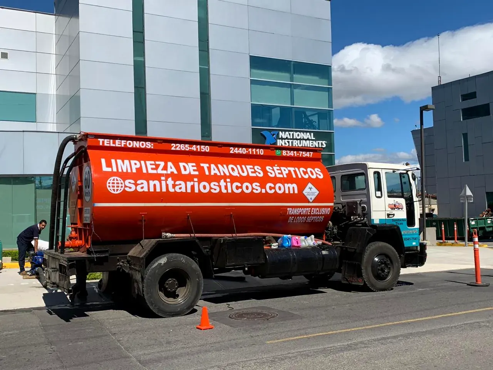
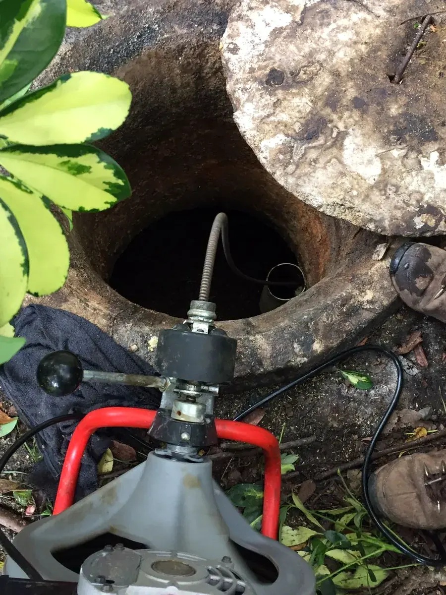
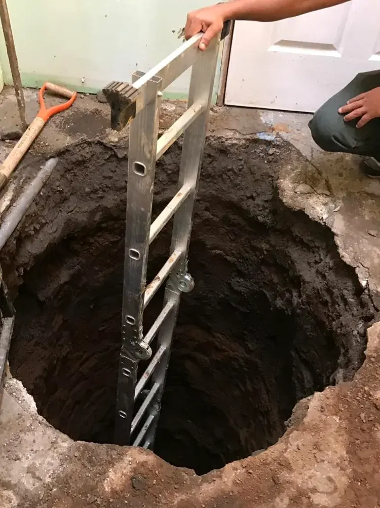
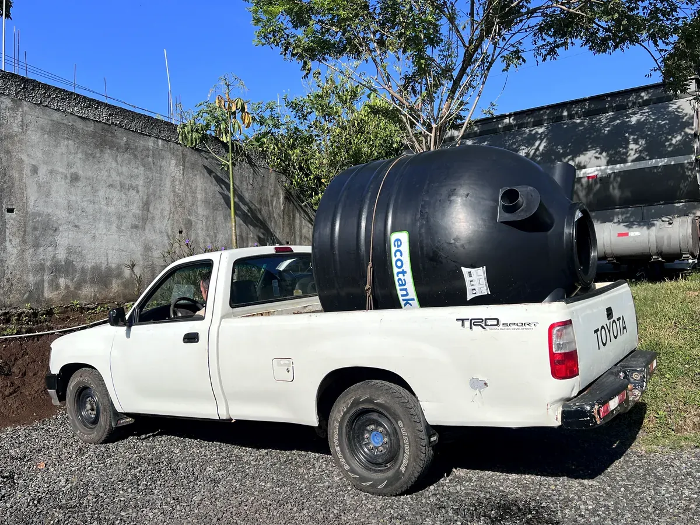
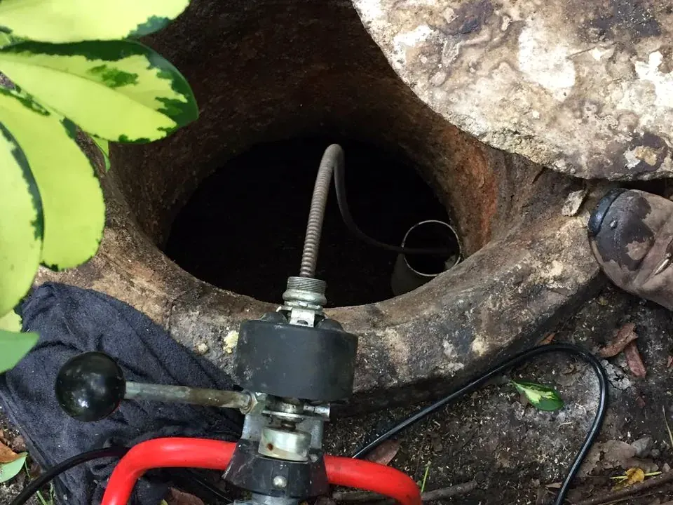

Emergencias atendidas el mismo día
Su tanque séptico, en manos ticas.
Limpieza de tanques sépticos, destaqueo de tuberías y manejo de aguas residuales con equipo propio. Tres sedes en el Valle Central y servicio en todo el país.

Servicios
Cinco servicios, una sola llamada
Todo lo que puede fallar en el sistema de aguas de una casa o un negocio lo resolvemos nosotros, con nuestro propio equipo y nuestra propia gente. Nada se subcontrata.

01Limpieza de tanques sépticos
Extracción completa con camión cisterna y sistema de succión, sin derrames ni malos olores.
02Limpieza y destaqueo de tuberías
Sonda eléctrica profesional para cualquier diámetro, desde un lavatorio hasta el colector principal.
03Trampas de grasa y diesel
Mantenimiento para restaurantes, sodas, comedores industriales, talleres y estaciones.

04Construcción de tanques, drenajes y plantas
Tanque séptico nuevo, drenaje de aguas o planta de tratamiento, según lo que el terreno permita.

05Alquiler de tanques plásticos
Recolección de aguas residuales en obras y eventos, con entrega y limpiezas programadas.
Cobertura
Tres sedes en el Valle Central.
Servicio en todo el país.
Las sedes están donde está la mayor demanda, para llegar rápido a una emergencia. Pero el camión sale a donde haga falta: Guanacaste, Puntarenas, Limón, la Zona Sur o la Zona Norte.
- AlajuelaAlajuela, Grecia, Naranjo, San Ramón, Palmares, Atenas, Poás
- HerediaHeredia, Belén, Santo Domingo, Barva, San Rafael, Santa Bárbara
- San JoséSan José, Escazú, Santa Ana, Curridabat, Desamparados, Moravia
- Resto del paísGuanacaste, Puntarenas, Limón, Cartago, Zona Norte y Zona Sur — bajo coordinación
En el campo

Cuándo llamarnos
Un tanque saturado avisa antes de convertirse en un problema caro.
Si reconoce alguna de estas señales en su casa o en su negocio, es momento de llamar. Atenderlo temprano cuesta una fracción de lo que cuesta atenderlo tarde.
Siguiente paso
Dígannos qué está pasando y le cotizamos hoy mismo
Una llamada o un mensaje con una foto bastan para orientarle. La cotización no tiene costo y el precio se lo damos antes de salir.
Atendemos residencias, condominios, restaurantes, sodas, talleres, hoteles, escuelas, industrias y proyectos de construcción.